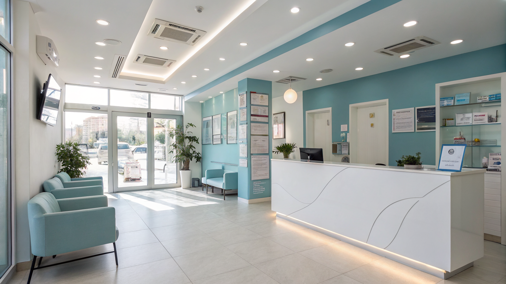

Come Evitare Sprechi di Tempo e Costi con le Visite NAS: La Soluzione Intelligente per Studi Dentistici Moderni

Quando i NAS visitano lo studio: strategie per ottimizzare tempi e costi nelle gestioni odontoiatriche
- Le ispezioni dei NAS evidenziano criticità organizzative e di rispetto verso il paziente negli studi dentistici.
- Sprechi di tempo e costi derivanti da una gestione manuale e non efficiente delle chiamate e appuntamenti aumentano ansia e insoddisfazione.
- Dentis AI, con la sua receptionist vocale AI H24 Serena, rappresenta la soluzione digitale per automatizzare l’accoglienza, il triage urgenze e l’invio di promemoria, ottimizzando risorse e migliorando l’esperienza paziente.
Analisi approfondita della notizia e delle implicazioni operative
La recente attenzione dei Nuclei Antisofisticazioni e Sanità (NAS) verso gli studi dentistici si focalizza sul rispetto del paziente e sul rigore delle procedure interne. Come sottolineato dal Comandante Giraudo, la cura non è solo clinica ma anche organizzativa: ogni paziente deve sentirsi accolto e ben gestito, in un ambiente che rispetti le normative di sicurezza e privacy, oltre a garantire un’esperienza senza stress.
Spesso, tuttavia, proprio questo aspetto organizzativo in molti studi presenta lacune causate da sistemi gestionali tradizionali, ancora basati su un contatto telefonico manuale, segreterie congestionate e difficoltà nel coordinare urgenze e appuntamenti fuori orario. Queste inefficienze diventano terreno fertile per errori, perdite di tempo e costi nascosti, oltre ad aumentare il rischio di ispezioni NAS negative.
Le conseguenze e i costi di non agire
Ignorare la necessità di innovazione nei processi quotidiani espone gli studi dentistici a molteplici rischi operativi e finanziari:
- Chiamate perse fuori orario: pazienti che necessitano supporto urgente nei weekend o oltre l’orario lavorativo rimangono senza risposta, aumentando l’ansia e il rischio di criticità sanitarie.
- Pazienti in ansia e insoddisfatti: la mancanza di un feedback tempestivo e umano o automatizzato compromette la fiducia, con possibili ricadute negative sulla reputazione online e passaparola.
- Segreteria sovraccarica: le telefonate e le richieste smisurate congestionano gli addetti, incrementando errori di gestione, disallineamenti del calendario appuntamenti e ritardi, che si traducono in inefficienza.
- Sprechi di risorse umane e di tempo prezioso: il personale rischia di essere assorbito completamente da compiti organizzativi ripetitivi anziché supportare attività a più alto valore aggiunto.
Nel contesto normativo attuale, non garantire una gestione efficace dell’agenda, della comunicazione e del triage urgenze potrebbe amplificare le criticità rilevate dalle ispezioni NAS, con conseguente impatto sulla continuità operativa e rischi economici per lo studio.
Come Dentis AI risolve il problema
In questo scenario, l’adozione di tecnologie avanzate come Dentis AI diventa un passo strategico imprescindibile per i professionisti odontoiatri, titolari di studi e direttori sanitari che puntano a ottimizzare tempi, costi e qualità del servizio.
Dentis AI introduce Serena, una receptionist telefonica vocale AI attiva 24/7 dotata di empatia digitale, capace di fornire risposte immediate e professionali sia in fascia oraria lavorativa che nei momenti di chiusura dello studio. Questo permette di:
- Gestire il triage delle urgenze: identificare tempestivamente le situazioni che richiedono interventi urgenti e organizzare appuntamenti in modo efficiente, riducendo ansia e attese inutili.
- Sincronizzare con Google Calendar: aggiornare automaticamente l’agenda, evitando doppi appuntamenti o errori di programmazione.
- Inviare promemoria via WhatsApp: automatizzare la comunicazione ai pazienti per conferma o rimando, migliorando la puntualità e riducendo le mancate presentazioni.
- Sollevare la segreteria da carichi ripetitivi: consentendo agli addetti di focalizzarsi su compiti a maggior valore strategico e relazionale.
L'integrazione naturale e user friendly di Dentis AI nel flusso di lavoro quotidiano consente al tuo studio di rispettare le norme NAS in modo più efficace e di elevare la qualità percepita dal paziente.
| Gestione Tradizionale | Con Dentis AI |
|---|---|
| Chiamate perse spesso fuori orario | Risposta telefonica 24/7 con receptionist vocale AI Serena |
| Segreteria sovraccaricata e rischi di errori | Automazione del triage e gestione appuntamenti sincronizzata |
| Promemoria manuali e dimenticanze frequenti | Promemoria WhatsApp automatici riducono no show e ritardi |
| Pazienti con ansia e attesa insoddisfacente | Empatia digitale di Serena migliora l’esperienza paziente e la fiducia |
💡 Ti è stato utile questo approfondimento?
Condividilo con un collega o un amico del settore Odontoiatri, Titolari di Studi Dentistici e Direttori Sanitari a cui potrebbe interessare!
FAQ - Domande frequenti per studi dentistici innovativi
1. Dentis AI è complesso da integrare con i sistemi gestionali esistenti?
No, Dentis AI è progettato per una semplice integrazione, con sincronizzazione automatica di Google Calendar e interfaccia user friendly per la gestione degli appuntamenti e comunicazioni.
2. Come garantisce Dentis AI l’empatia nel rapporto con i pazienti?
La receptionist vocale Serena è dotata di algoritmi avanzati di linguaggio naturale e risposta empatica, per fornire supporto rassicurante e professionale 24/7.
3. Quali sono i vantaggi economici nell’adottare Dentis AI?
La riduzione delle chiamate perse, degli errori di calendario e delle inefficienze in segreteria si traduce in un drastico risparmio di tempo e costi, con un miglioramento contemporaneo della soddisfazione e fidelizzazione del paziente.
Inizia Subito
Prova Gratuita di 7 giorni senza carta di credito. Piano PRO a €149/mese.
Fonti Ufficiali e Risorse Esterne
Scopri l'Intelligenza Artificiale per la tua attività
Ottimizza i processi e aumenta le vendite con le soluzioni B2B di RM Studio.
Scopri Dentis AI